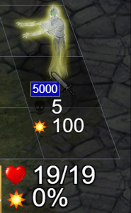
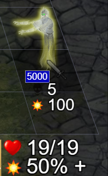
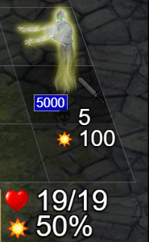
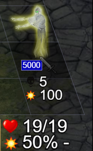
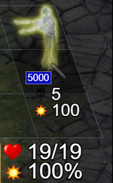

Скрипт для боёв [UPD]
Ссылка на скрипт
Текущие возможности скрипта (анимации и картинки примеров ниже в статье):
Обновление от 13 августа 2023:
- Показывает вероятность БД
- Показывает путь цепной молнии, урон по первой цели (при нажатии ctrl)
- Изменение шкалы при наведении на кнопку натиска
- Возможность скрыть "стартовый бонус АТБ" в настройках боя
- Вероятность удачи и БД отображается слева от шкалы (иногда справа удача не влезала)
- Исправлены некоторые баги игры для обладателей скрипта (подсказки урона губительного пике и сокрушающего удара)
Обновление от 27 июля 2023:
- Показывает урон от абилок Громорвержца и Ярла
- Показывает урон от божественной мести
- В итогах боя отображение таблицы с нанесённым уроном существами за бой
- Отображение бафов и дебафов существ при наведении курсора на них
- Веротяность срабатывания капкана трапперов
- показывает вероятность попасть по бестелесным
- отображение вероятности удачи при ударе и для любого стека на поле
- отображение вероятности срабатывания умений (оглушение, атака страхом и др);
- отображение длительности соблазнения;
- показывает стартовый разброс АТБ.
Отображение морали и удачи
Из "Об игре": вероятности срабатывания удачи и морали = luck^(1+[количество удачных срабатываний]-[количество несработавших моментов]*luck/(1-luck)), где luck - удача/10.
Скрипт считает всё за вас и показывают текущую вероятность. Особенно полезно, если вероятность удачи или морали 100% или около того, можно рассчитывать срабатывание.
Вероятность можно посмотреть не только при ударе кем-либо, а для любого стека на поле боя, достаточно лишь навести курсор на него:
Важно! Счётчик сбрасывается, если происходет какое-либо событие на изменение удачи или морали. Например удача от лепрекона или джиннов, БД от сатиров или аура зомби. Скрипт это учитывает.
Путь цепной молнии
Летит к ближайшему стеку. Большие стеки считаются по верхней левой клетке. Если несколько стеков равноудаленны от искомого - путь выбирается случайный (в скрипте будет отображено).
Урон от абилок громовержца и ярла
Интересный момент - при расчёте урона от этих абилок у цели вместо защиты в ближнем бою учитывается защита от стрелков. Речь идёт только про бонусы с артефактов. Перки, умения существ и всё остальное считается именно для ближнего боя.
Ещё дополнительный момент - бонус к урону ближнего боя с артефактов у самого ярла\грома не даст дополнительный урон. И бонус урона стрелков, кстати, тоже.
Продув драконов, между прочим, работает по точно таким же правилам.
Урон от божественной мести
Урон = round(F*(30+round(3*[число существ]^0.7))
F - квадратный корень из суммы количеств убитых стеком существ, домноженных на их уровень
round - округление
Эффекты существ
Показывает длительность и количество наложенных бафов и дебафов существа при наведении курсора на него. Больше нет необходимости прокликивать каждое существо, для отслеживания длительности заклинаний.
Не работает в классическом интерфейсе. Удобно пользоваться при расположении окна чата справа.
Статистика урона
Показывает статистику нанесённого урона существами и героями во время боя.
Вероятность капкана
Подробно о том, как работают капканы гоблинов расписано здесь.
Вероятностные умения
Нюансы расчёта:
» если HP отряда > HP цели, то Вероятность = 25% + 3% * (HP отряда/ HP цели).
» если HP отряда <= HP цели, то Вероятность = 25% - 3% * (HP цели/ HP отряда),
» вероятность не может выходить из интервала [5%;75%];
» солдатская удача удваивает количество попыток (интервал становится [10%;94%];
» для некоторых умения значения HP подставляются ДО удара, для некоторых - ПОСЛЕ;
» сковывающий выстрел и удар имеют "встроенную" солдатскую удачу;
Умения, которые поддерживает скрипт
| Расчёт до удара | Расчёт после удара |
| Оглушающий удар Оцепенение Удар лапой Волна огня Оглушающий выстрел Смертельная атака |
Атака страхом Ослепление Отбрасывающий удар Качечка Штурм Метка огня Удар молнией Удар хлыстом Усиленная стрела Окаменение Паралич Колдовской удар Сковывающий выстрел Сковывающий удар |
Если умение рассчитывается после удара - вероятность может быть разная, в зависимости от урона. В этом случае скрипт показывает два пограничных значения (при минималке и максималке соответственно).
Длительность соблазнения
Тут всё просто:
Стартовый разброс АТБ
Это более тонкий нюанс. В начале матча каждый стек получает сдвиг по шкале вперёд от 0 до 10 единиц. Это и обеспечивает возможность обгона стеков с меньшей инициативой.
Суть в том, что в некоторых боях (ивентах) этот самый разброс одинаковый для всех игроков в конкретном бою. Посмотрев чужой бой (или свой же) можно более точно спрогнозировать первые ходы. Можно например понять, что "поймать" шкалу, если у вражеского стека сдвиг 10 - невозмжно (или наоборот).
Вероятность попасть по бестелесным
Инструкция
|  |  |  |  |  |
| Точно промах | Было попадание | 50/50 | Был промах | Точно попадание |
Некоторые известные проблемы на данный момент:
- Обязательно! Для корректной работы вероятности удачи необходимо, чтобы весь бой отображался с его начала. При обновлении в середине боя проценты будут неверные, необходимо "отсмотреть" бой сначала;
- не отображется удача для стеков со способностями цепной выстрел, удар с небес и губительное пике;
- не отображается удача при наведении (внизу справа) у существ, которые стрелки и колдуны одновременно. Либо которые накапливают кровь и являются стрелками или колдунами; (решено)
Некоторые возможные дальнешие векторы улучшения скрипта:
- путь цепной молнии; (добавлено)
- вероятность морали; (добавлено)
- вероятность попадания по существам с побегом;
- возможно что-то ещё